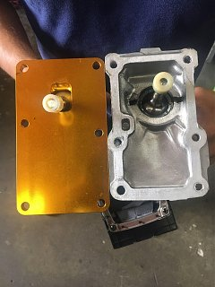
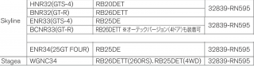

-
I was looking for help with finding a short shifter that will work for my 86 300ZR. Based on what i read I thought it had the FS5W71C transmission seeing how it is 5 speed N/A, but after removing the shifter the bolt pattern does not line up with the ISR shifter. I was unable to locate any information on the physical transmission as to which one it is. -
Thanks a lot. Every piece of documentation i have says its an 86 but i could be wrong. I didn't get any pics of the trans while i had it raised. -
While i have you, do you have a shifter recommendation for my trans? -
It may have been produced in the end of 86, but if it's a 300ZR with a VG30DE, it should be the 87-89 model type. You can PM me your chassis code and I can see if I can look it up.
A replacement shifter is a trickier question. One option is to adapt a certain type of S13 shifter:
https://z31performance.com/forum/z31…r-in-a-fs5r30a
Another option that has been claimed is that certain Nismo shifters for R-chassis 30A transmission work. I can't say for sure, but based on my research it should be the models in the attached table. If you find out, let me know too. This is for the Nismo solid shifter, but they also offer another type, check their catalog.
https://z31performance.com/forum/z31…698#post535698Last edited by kaur; 09-28-2018, 02:22 AM. -
You can look in the factory service manuals in the MT (manual transmission) section. They show the different transmissions shifter covers.
Can't be the fs5r90a bw because that's a 4 bolt cover.
The 71C has different spaced bolt holes on the left side, like your picture of the short shifter and the circlip to remove the shifter so you don't have to pull the plate when dropping the trans. Here's a crappy pic of the side of the one I have out waiting for my winter stick swap for my gold Z:
So that leaves the 30A which has same the same bolt spacing on both sides of the cover like yours.
Here's a picture of a 30A off okotoks.adsinalberta.com from the net:

Copyright © 2006–. All rights reserved. Privacy Policy
Comment